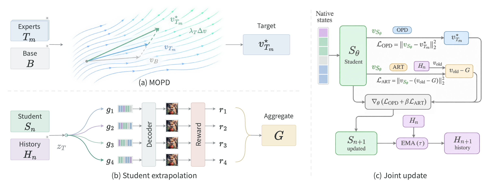
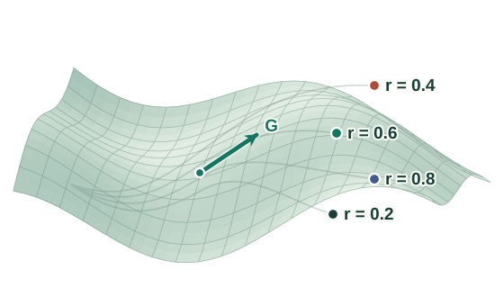

Consolidating specialist diffusion teachers.
Task-specific reinforcement learning yields strong diffusion specialists for compositional generation, text rendering, and visual preference, yet each specialist sacrifices off-task quality. Multi-teacher on-policy distillation (OPD) unifies them into one student, and recent methods extrapolate along a frozen teacher–base velocity difference to build stronger proxy targets. However, because that direction remains locked between static models, late-stage student progress plateaus below the proxy-teacher ceiling.
TL;DR:
DexOPD pairs extrapolated teacher targets with reward-guided historical student self-extrapolation. Using the velocity difference between the current student and its lagging EMA history, it samples same-noise candidate rollouts and converts their endpoint–reward covariance into an adaptive update direction—enabling one SD3.5-Medium LoRA to surpass all three specialist teachers simultaneously.
0.9534→0.9736
GenEval dense reward
Surpasses the GenEval specialist (0.9534), proxy teacher ceiling (0.9652), and DreOPD (0.9622).
0.9435→0.9515
OCR text rendering
Exceeds the single-task OCR specialist teacher (0.9435) and all evaluated multi-teacher OPD baselines.
6.2813→6.4875
DrawBench Aesthetic
+0.2062 over STEP-OPD* (6.2813) and +0.2713 over the Aesthetic specialist teacher (6.2162).
Method
The Dual-Extrapolation Setup
At each collection round, native student rollouts receive two complementary supervision signals: a fixed teacher-extrapolated proxy target and an evolving self-extrapolated reward direction.
01 · Teacher Extrapolation
Strengthen the frozen specialist
vproxy = vT + λ(vT − vB)
At every state visited by the native student rollout, query the matching frozen task specialist Tq and base model B. Extending their difference by λ = 1.2 forms a detached one-step Euler target μT,j that anchors multi-task competence from initialization.
02 · Historical Self-Extrapolation
Probe the student's recent progress
v(g) = vθ + g(vθ − vH)
Maintain a lagging historical EMA Hr (τ = 0.995) of the student adapter. From the same initial noise ε, integrate four candidate trajectories under gains 𝒢 = {0, 0.05, 0.25, 0.50}—reusing the native OPD endpoint directly as g = 0.
03 · Covariance & Joint Update
Aggregate pairwise reward contrasts
G = C / RMS(C), ℒ = ℒOPD + βℒaux
Score the four decoded endpoints with task verifier Rq. Normalize their endpoint–reward covariance C to unit RMS to obtain direction G (muted to 0 when rewards tie), shift the auxiliary target along +G, and optimize both targets jointly (β = 1.8).

Figure 1. Overview of the DexOPD framework. (a) Extrapolated task teachers supervise native student states via ℒOPD. (b) Historical self-extrapolation against Hr generates same-noise candidates whose endpoint–reward covariance produces the unit-RMS direction G. (c) Teacher and auxiliary targets jointly update the student before the historical EMA reference is refreshed.
One denoising step at a state visited by the student. The surface is schematic.
Extend the specialist's prediction
Ask the frozen base model and the task specialist for a velocity at the same state. Extend their difference beyond the specialist, then take one Euler step to obtain the proxy target.
vproxy = vT + λ (vT − vB)
The paper uses λ = 1.2 for teacher extrapolation.
One prompt and one noise sample. Each line uses a different gain throughout its rollout.
Follow the student's recent change
Use a historical exponential moving average as the reference. At each step, extrapolate the current student's velocity away from that reference. Four gains produce four endpoints for the task scorer.
v(g) = vS + g (vS − vH)
The gain g = 0 reuses the native student rollout.
Shared noiseEndpoints

Illustrative endpoint positions and rewards. The arrow shows the direction of endpoint–reward covariance.
Turn reward differences into a direction
Weight each pair's endpoint difference by its reward difference. Their sum gives a direction toward higher reward. Normalize it to unit RMS to obtain G.
G = C / RMS(C)
On a native step, the auxiliary target shifts along G. The teacher and active auxiliary losses jointly update the student.
When does the reward signal activate?
A candidate group activates the auxiliary update (a = 1) whenever at least two of its four rewards differ and RMS(C) > 10−8. Discrete verifiers (GenEval, OCR) taper activity as easy prompts saturate, while continuous Aesthetic scoring remains active on 99.80% of groups.
Active auxiliary direction across 24,000 groups / task
Figure 2. Interactive geometric intuition on the latent manifold. Switch tabs to inspect one-step teacher extrapolation, drag the slider to watch four same-noise candidate trajectories diverge, or toggle tied rewards to see the covariance gate mute the auxiliary direction (G = 0).
Quantitative Evaluation
It surpasses every specialist in one student
Evaluated after an identical budget of 1,000 optimizer updates at 512 × 512 resolution (40 Euler steps) across GenEval, OCR, and five DrawBench preference metrics.
Breaking past the proxy-teacher ceiling
GenEval reward over 1,000 updates. Hover or click any step to inspect exact scores.
Three-task optimization stability
Steady progress across all three tasks over 1,000 updates.
Three-objective profile across all 11 models
Single-task teachers peak on one column while dropping on the other two. Multi-teacher OPD consolidates all three, with DexOPD leading every column.
DexOPDSpecialist targetOPD baselines
Table 1 · Multi-task generation performance after 1,000 updates
All 11 models and 14 metrics (154 scores) from the paper's main comparison.
Table 1. Multi-task generation performance after 1,000 updates.
Model
GenEval
OCR
DrawBench
Single
Two
Count
Colors
Position
Attr.
Acc.
Reward
Aesthetic
PickScore
ImageReward
CLIPScore
HPSv2.1
(a) Base model
SD3.5-Medium
0.9844
0.7702
0.5714
0.8112
0.2200
0.5149
0.6336
0.6446
0.5486
5.3899
0.8614
0.8383
0.2895
0.2924
(b) Single-task specialist teachers
GenEval Teacher
1.0000
0.9848
0.9250
0.9069
0.9750
0.8275
0.9349
0.9534
0.6515
5.2635
0.8513
0.9277
0.2869
0.2673
OCR Teacher
0.9719
0.7172
0.6000
0.7819
0.2225
0.4725
0.6144
0.6617
0.9435
5.2605
0.8580
0.8972
0.2909
0.2732
Aesthetic Teacher
0.9719
0.8864
0.6063
0.8670
0.2950
0.6575
0.7066
0.4791
0.5881
6.2162
0.9233
1.5016
0.2960
0.3452
(c) Multi-task reinforcement learning
GRPO-Guard
0.9875
0.8460
0.7640
0.7846
0.2475
0.5174
0.6764
0.7202
0.7210
5.6812
0.8770
1.1531
0.2904
0.3091
DiffusionNFT
0.8844
0.6212
0.6429
0.7340
0.2450
0.4453
0.5817
0.7029
0.9434
5.3674
0.8412
0.6314
0.2787
0.2642
DiffusionART
0.8406
0.5707
0.5497
0.5665
0.1900
0.2811
0.4847
0.4427
0.9033
5.6673
0.8292
0.7193
0.2710
0.2653
(d) Multi-teacher on-policy distillation
DiffusionOPD
1.0000
0.9924
0.9472
0.8936
0.9650
0.8383
0.9373
0.9543
0.9371
6.1820
0.9237
1.5110
0.3006
0.3547
DreOPD
1.0000
0.9899
0.9627
0.9069
0.9725
0.8756
0.9495
0.9622
0.9354
6.2182
0.9237
1.5259
0.2986
0.3558
STEP-OPD*
1.0000
0.9949
0.9379
0.8989
0.9750
0.8657
0.9440
0.9562
0.9378
6.2813
0.9248
1.5207
0.2985
0.3566
DexOPD (ours)
1.0000
1.0000
0.9688
0.9548
0.9525
0.8750
0.9566
0.9736
0.9515
6.4875
0.9190
1.5127
0.2914
0.3484
Higher is better. Bold: best score; underline: second-best (including ties). GenEval reports six category accuracies, overall accuracy (Acc.), and dense reward. *Paper-based reproduction.
Every component contributes across all three tasks
Removing teacher extrapolation (λ=0), dropping the student auxiliary branch (β=0), or anchoring to the frozen base (Hr=B) degrades every primary metric.
02 · Auxiliary-weight sensitivity (β sweep)
Balancing three tasks across 11 auxiliary weights
With λ = 1.2 fixed, β = 1.8 attains peak DrawBench Aesthetic (6.4875) while staying within 0.0007 of the GenEval peak and 0.0005 of the OCR peak. Hover or click any β to inspect all 7 metrics.
Extrapolating a frozen specialist boosts its own target near λ ∈ [0.8, 1.4], but causes severe cross-task collapse at larger λ. Distilling at λ = 1.2 harvests strong targets without sacrificing off-task quality.
04 · Wall-clock training cost & batch scaling
Small-batch DexOPD matches DiffusionOPD speed while leading all three metrics
Measured on 8 × NVIDIA H20 GPUs over 1,000 updates. Reducing native batch size from 72 to 24 cuts update time to 25.59 s—matching standard single-trajectory DiffusionOPD (25.76 s) and outperforming STEP-OPD* (32.53 s).
DexOPD (small batch)Batch 24
25.59 s / update
GenEval 0.9680 · OCR 0.9488 Aesthetic 6.4857
DexOPD (default)Batch 72
68.18 s / update
GenEval 0.9736 · OCR 0.9515 Aesthetic 6.4875
DiffusionOPDBatch 72
25.76 s / update
GenEval 0.9543 · OCR 0.9371 Aesthetic 6.1820
STEP-OPD*Batch 72
32.53 s / update
GenEval 0.9562 · OCR 0.9378 Aesthetic 6.2813
Checkpoint & Inference
Run DexOPD
The public release provides the rank-32 evaluation EMA LoRA from update 1,000, loaded directly into Stable Diffusion 3.5 Medium via Diffusers and PEFT.
Step 01
Base model access
Accept the community license for Stable Diffusion 3.5 Medium on Hugging Face and authenticate locally.
@misc{ke2026dexopd,
title = {DexOPD: Dual-Extrapolation On-Policy Distillation for Diffusion Models},
author = {Yunchao Ke and Yanzhe Hu and Yi Yang and Jiachun Jin and Zhihong Liu and Zhijie Deng},
year = {2026},
eprint = {2611.31969},
archivePrefix = {arXiv},
primaryClass = {cs.AI},
url = {https://arxiv.org/abs/2611.31969}
}